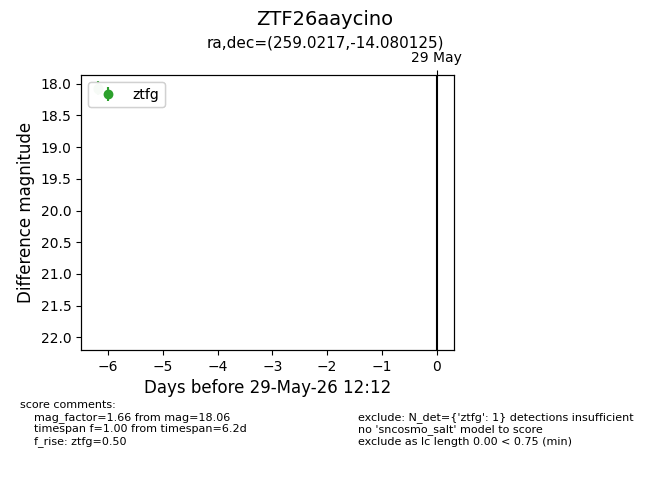
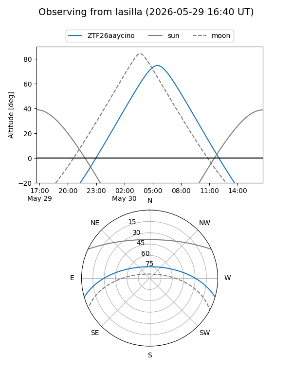
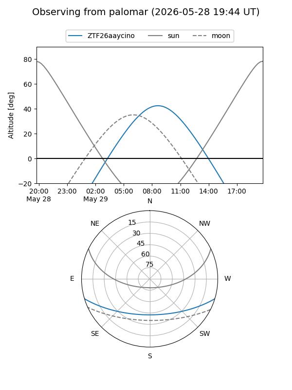

ZTF26aaycino
Target ZTF26aaycino at 2026-05-29 12:16
Aliases and brokers:
lsst-FINK: link
lsst-Lasair: link
lsst-ALeRCE: link
ztf-FINK: link
ztf-Lasair: link
ztf-ALeRCE: link
alt names
ZTF26aaycino (ztf,fink_ztf)
Coordinates:
equatorial (ra, dec) = 259.0217,-14.08013
equatorial (HMS+DMS) = 17:16:05.20,-14:04:48.45
galactic (l, b) = (8.9184,+13.76559)
Flags:
Photometry:
last ztfg=18.06
1 ztfg detections
Lightcurve

Visibility


Additional plots